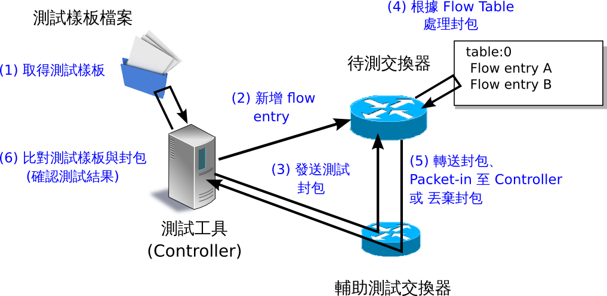
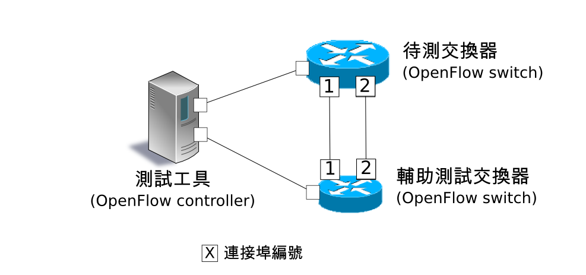

本章將說明如何檢驗 OpenFlow 交換器對於 OpenFlow 規範的功能支援完整度，及測試工具的使用方法。
本工具使用測試樣板檔案，對待測的 OpenFlow 交換器，進行 Flow Entry 和 Meter Entry 的新增以處理封包，並且將 OpenFlow 交換器所處理及轉送封包的結果與測試樣板檔案所描述的”預期處理結果”做比對。亦即檢驗 OpenFlow 交換器對於 OpenFlow 規格功能的支援狀態。
在測試工具中，已經有包含 OpenFlow 1.3 版本中的 FlowMod 訊息、MeterMod 訊息和 GroupMod 訊息的測試動作。
| 測試訊息種類 | 相應的參數 |
|---|---|
| OpenFlow1.3 FlowMod 訊息 | match (IN_PHY_PORT 除外) actions（ SET_QUEUE 除外 ） |
| OpenFlow1.3 MeterMod 訊息 | 全部 |
| OpenFlow1.3 GroupMod 訊息 | 全部 |
若要了解關於封包產生及修改的詳細資料，請參考「 封包函式庫 」。
測試工具實際執行時如下列示意圖。 測試樣板檔案中包含了 “待加入的 Flow Entry 和 Meter Entry“、”檢驗封包” 和 ”預期處理結果”。 為了執行測試執行所需的環境設定將在後面的 執行測試的環境 章節中描述。
在指定了測試樣板檔案後，樣板中的測試案例會被依序執行，最後並顯示結果（ OK / ERROR ）。 在出現 ERROR 的測試結果時，錯誤訊息會同時一併出現在畫面上。 最後的測試結果會顯示 OK / ERROR 的數量及錯誤內容。
--- Test start ---
match: 29_ICMPV6_TYPE
ethernet/ipv6/icmpv6(type=128)-->'icmpv6_type=128,actions=output:2' OK
ethernet/ipv6/icmpv6(type=128)-->'icmpv6_type=128,actions=output:CONTROLLER' OK
ethernet/ipv6/icmpv6(type=135)-->'icmpv6_type=128,actions=output:2' OK
ethernet/vlan/ipv6/icmpv6(type=128)-->'icmpv6_type=128,actions=output:2' ERROR
Received incorrect packet-in: ethernet(ethertype=34525)
ethernet/vlan/ipv6/icmpv6(type=128)-->'icmpv6_type=128,actions=output:CONTROLLER' ERROR
Received incorrect packet-in: ethernet(ethertype=34525)
match: 30_ICMPV6_CODE
ethernet/ipv6/icmpv6(code=0)-->'icmpv6_code=0,actions=output:2' OK
ethernet/ipv6/icmpv6(code=0)-->'icmpv6_code=0,actions=output:CONTROLLER' OK
ethernet/ipv6/icmpv6(code=1)-->'icmpv6_code=0,actions=output:2' OK
ethernet/vlan/ipv6/icmpv6(code=0)-->'icmpv6_code=0,actions=output:2' ERROR
Received incorrect packet-in: ethernet(ethertype=34525)
ethernet/vlan/ipv6/icmpv6(code=0)-->'icmpv6_code=0,actions=output:CONTROLLER' ERROR
Received incorrect packet-in: ethernet(ethertype=34525)
--- Test end ---
--- Test report ---
Received incorrect packet-in(4)
match: 29_ICMPV6_TYPE ethernet/vlan/ipv6/icmpv6(type=128)-->'icmpv6_type=128,actions=output:2'
match: 29_ICMPV6_TYPE ethernet/vlan/ipv6/icmpv6(type=128)-->'icmpv6_type=128,actions=output:CONTROLLER'
match: 30_ICMPV6_CODE ethernet/vlan/ipv6/icmpv6(code=0)-->'icmpv6_code=0,actions=output:2'
match: 30_ICMPV6_CODE ethernet/vlan/ipv6/icmpv6(code=0)-->'icmpv6_code=0,actions=output:CONTROLLER'
OK(6) / ERROR(4)
下面說明如何使用測試工具。
你需要依照測試樣板的相關規則來建立一個測試樣板，以完成你想要的測試項目。
測試樣板的附檔名是「.json」，格式如下。
[
"xxxxxxxxxx", # 測試名稱
{
"description": "xxxxxxxxxx", # 測試內容的描述
"prerequisite": [
{
"OFPFlowMod": {...} # 所要新增的 flow entry、meter entry、group entry
}, # ( Ryu 的 OFPFlowMod、OFPMeterMod、OFPGroupMod 使用 json 的形態描述 )
{ #
"OFPMeterMod": {...} # 要將 flow entry 處理的結果轉送出去的情況下
}, # (actions=output)
{ # 請指定輸出埠的編號為「2」
"OFPGroupMod": {...} # 若是封包轉送至 group entry 的情況
}, # 請指定輸出埠號為「2」或「3」
{...} #
],
"tests": [
{
# 產生封包
# 單次產生封包或者一定時間內連續產生封包均可。
# 封包的產生方法有 (A) (B) 兩種
# (A) 單次產生封包
"ingress": [
"ethernet(...)", # ( 在 Ryu 封包函式庫的建構子 ( Constructor ) 中描述 )
"ipv4(...)",
"tcp(...)"
],
# (B) 一段時間內連續產生封包
"ingress": {
"packets":{
"data":[
"ethernet(...)", # 與 (A) 相同
"ipv4(...)",
"tcp(...)"
],
"pktps": 1000, # 每秒產生封包的數量 ( packet per second )
"duration_time": 30 # 連續產生封包的時間長度，以秒為單位。
}
},
# 預期處理的結果
# 處理的結果有 (a) (b) (c) (d) 這幾種
# (a) 封包轉送 ( actions=output:X )
"egress": [ # 預期轉送封包
"ethernet(...)",
"ipv4(...)",
"tcp(...)"
]
# (b) Packet in ( actions=CONTROLLER )
"PACKET_IN": [ # 預期出現的 Packet in 封包
"ethernet(...)",
"ipv4(...)",
"tcp(...)"
]
# (c) table-miss
"table-miss": [ # 期望 table-miss 發生時的 table ID
0
]
# (d) 封包轉送 ( actions=output:X ) 時的流量 ( Throughput ) 測試
"egress":[
"throughput":[
{
"OFPMatch":{ # 為了 Throughput 測試
... # 新增在輔助交換器中
}, # flow entry 的 match 條件
"kbps":1000 # 指定期望的流量以 Kbps 為單位
},
{...},
{...}
]
]
},
{...},
{...}
]
}, # 測試項目1
{...}, # 測試項目2
{...} # 測試項目3
]
例如，產生封包中「(B) 一段時間內產生封包」和預期處理結果中「(d) 封包轉送 ( actions=output:X ) 時流量測試」搭配時就可以用來對待測交換器進行流量 ( Throughput ) 的測試。
註解
作為一個測試樣板在 Ryu 的原始碼中，提供了一些樣板檔案來檢查測試參數是否符合 OpenFlow1.3 FlowMod 中的 match / action 訊息。
ryu/tests/switch/of13
接下來說明測試工具執行時所需的環境。
對於做為一個輔助交換器來說，下面的條件是一個 OpenFlow 交換器必須要支援的。
註解
Ryu 原始碼當中利用腳本實作了一個在 mininet 上的測試環境，當中是採用 Open vSwtich 做為待測交換器。
ryu/tests/switch/run_mininet.py
腳本的使用範例請參照 測試工具使用範例 。
測試工具已經被公開在 Ryu 的原始碼當中。
| 原始碼 | 說明 |
|---|---|
| ryu/tests/switch/tester.py | 測試工具 |
| ryu/tests/switch/of13 | 測試樣板的一些範例 |
| ryu/tests/switch/run_mininet.py | 建立測試環境的腳本 |
使用下面的指令來執行測試工具。
$ ryu-manager [--test-switch-target DPID] [--test-switch-tester DPID]
[--test-switch-dir DIRECTORY] ryu/tests/switch/tester.py
| 選項 | 說明 | 預設值 |
|---|---|---|
| –test-switch-target | 待測交換器的 datapath ID | 0000000000000001 |
| –test-switch-tester | 輔助交換器的 datapath ID | 0000000000000002 |
| –test-switch-dir | 測試樣板的存放路徑 | ryu/tests/switch/of13 |
註解
測試工具是繼承自 ryu.base.app_manager.RyuApp 的一個應用程式。跟其他的 Ryu 應用程式一樣使用 –verbose 選項顯示除錯的訊息。
測試工具啟動之後，待測交換器和輔助交換器會跟 Controller 進行連接，接著測試動作就會使用指定的測試樣板開始進行測試。
下面介紹如何使用和測試樣板檔案和原始測試樣板檔案的步驟。
使用 Ryu 的原始碼中測試樣板範本（ ryu/tests/switch/of13 ）來檢查 FlowMod 訊息的 match / action，MeterMod 的訊息和 GroupMod 訊息。
本程序中測試環境和測試環境的產生腳本（ ryu/tests/switch/run_mininet.py ），也因此測試目標是 Open vSwitch。使用 VM image 來打造測試環境以及登入的方法請參照「 交換器（ Switching Hub ） 」以取得更詳細的資料。
建構測試環境
VM 環境的登入，執行測試環境的建構腳本。
ryu@ryu-vm:~$ sudo ryu/ryu/tests/switch/run_mininet.pynet 命令的執行結果如下。
mininet> net c0 s1 lo: s1-eth1:s2-eth1 s1-eth2:s2-eth2 s1-eth3:s2-eth3 s2 lo: s2-eth1:s1-eth1 s2-eth2:s1-eth2 s2-eth3:s1-eth3
執行測試工具
為了執行測試工具，打開連線到 Controller 的 xterm。
mininet> xterm c0在「Node: c0 (root)」的 xterm 中啟動測試工具。 這時候做為測試樣板檔案的位置，請指定測試樣板範例路徑（ ryu/tests/switch/of13 ）。 接著，由於 mininet 測試環境中待測交換器和輔助交換器的 datapath ID 均有預設值，因此 –test-switch-target / –test-switch-tester 選項可省略。
Node: c0:
root@ryu-vm:~$ ryu-manager --test-switch-dir ryu/ryu/tests/switch/of13 ryu/ryu/tests/switch/tester.py測試工具執行之後就會出現下列訊息，並等待待測交換器和輔助交換器連結到 Controller。
root@ryu-vm:~$ ryu-manager --test-switch-dir ryu/ryu/tests/switch/of13/ ryu/ryu/tests/switch/tester.py loading app ryu/ryu/tests/switch/tester.py loading app ryu.controller.ofp_handler instantiating app ryu/ryu/tests/switch/tester.py of OfTester target_dpid=0000000000000001 tester_dpid=0000000000000002 Test files directory = ryu/ryu/tests/switch/of13/ instantiating app ryu.controller.ofp_handler of OFPHandler --- Test start --- waiting for switches connection...待測交換器和輔助交換器連接 Contreoller 完成，測試開始。
root@ryu-vm:~$ ryu-manager --test-switch-dir ryu/ryu/tests/switch/of13/ ryu/ryu/tests/switch/tester.py loading app ryu/ryu/tests/switch/tester.py loading app ryu.controller.ofp_handler instantiating app ryu/ryu/tests/switch/tester.py of OfTester target_dpid=0000000000000001 tester_dpid=0000000000000002 Test files directory = ryu/ryu/tests/switch/of13/ instantiating app ryu.controller.ofp_handler of OFPHandler --- Test start --- waiting for switches connection... dpid=0000000000000002 : Join tester SW. dpid=0000000000000001 : Join target SW. action: 00_OUTPUT ethernet/ipv4/tcp-->'actions=output:2' OK ethernet/ipv6/tcp-->'actions=output:2' OK ethernet/arp-->'actions=output:2' OK action: 11_COPY_TTL_OUT ethernet/mpls(ttl=64)/ipv4(ttl=32)/tcp-->'eth_type=0x8847,actions=copy_ttl_out,output:2' ERROR Failed to add flows: OFPErrorMsg[type=0x02, code=0x00] ethernet/mpls(ttl=64)/ipv6(hop_limit=32)/tcp-->'eth_type=0x8847,actions=copy_ttl_out,output:2' ERROR Failed to add flows: OFPErrorMsg[type=0x02, code=0x00] ...ryu/tests/switch/of13 資料夾以下的測試樣板全部執行完畢，測試也隨之結束。
測試樣板範本檔案一覽
提供測試樣板範本檔案包括，對應 match / actions 各種設定的 Flow Entry 新增：match（ 或不 match ）多數 pattern 的封包改寫、對應滿足一定頻率的後變更優先權的 Meter Entry 新增：Meter Entry 中 match 的封包連續改寫、對應全連接埠的 FLOODING 的 Group Entry 新增：Group Entry 中 match 封包的連續改寫。ryu/tests/switch/of13/action: 00_OUTPUT.json 20_POP_MPLS.json 11_COPY_TTL_OUT.json 23_SET_NW_TTL_IPv4.json 12_COPY_TTL_IN.json 23_SET_NW_TTL_IPv6.json 15_SET_MPLS_TTL.json 24_DEC_NW_TTL_IPv4.json 16_DEC_MPLS_TTL.json 24_DEC_NW_TTL_IPv6.json 17_PUSH_VLAN.json 25_SET_FIELD 17_PUSH_VLAN_multiple.json 26_PUSH_PBB.json 18_POP_VLAN.json 26_PUSH_PBB_multiple.json 19_PUSH_MPLS.json 27_POP_PBB.json 19_PUSH_MPLS_multiple.json ryu/tests/switch/of13/action/25_SET_FIELD: 03_ETH_DST.json 14_TCP_DST_IPv4.json 24_ARP_SHA.json 04_ETH_SRC.json 14_TCP_DST_IPv6.json 25_ARP_THA.json 05_ETH_TYPE.json 15_UDP_SRC_IPv4.json 26_IPV6_SRC.json 06_VLAN_VID.json 15_UDP_SRC_IPv6.json 27_IPV6_DST.json 07_VLAN_PCP.json 16_UDP_DST_IPv4.json 28_IPV6_FLABEL.json 08_IP_DSCP_IPv4.json 16_UDP_DST_IPv6.json 29_ICMPV6_TYPE.json 08_IP_DSCP_IPv6.json 17_SCTP_SRC_IPv4.json 30_ICMPV6_CODE.json 09_IP_ECN_IPv4.json 17_SCTP_SRC_IPv6.json 31_IPV6_ND_TARGET.json 09_IP_ECN_IPv6.json 18_SCTP_DST_IPv4.json 32_IPV6_ND_SLL.json 10_IP_PROTO_IPv4.json 18_SCTP_DST_IPv6.json 33_IPV6_ND_TLL.json 10_IP_PROTO_IPv6.json 19_ICMPV4_TYPE.json 34_MPLS_LABEL.json 11_IPV4_SRC.json 20_ICMPV4_CODE.json 35_MPLS_TC.json 12_IPV4_DST.json 21_ARP_OP.json 36_MPLS_BOS.json 13_TCP_SRC_IPv4.json 22_ARP_SPA.json 37_PBB_ISID.json 13_TCP_SRC_IPv6.json 23_ARP_TPA.json 38_TUNNEL_ID.json ryu/tests/switch/of13/group: 00_ALL.json 01_SELECT_IP.json 01_SELECT_Weight_IP.json 01_SELECT_Ether.json 01_SELECT_Weight_Ether.json ryu/tests/switch/of13/match: 00_IN_PORT.json 13_TCP_SRC_IPv4.json 25_ARP_THA.json 02_METADATA.json 13_TCP_SRC_IPv6.json 25_ARP_THA_Mask.json 02_METADATA_Mask.json 14_TCP_DST_IPv4.json 26_IPV6_SRC.json 03_ETH_DST.json 14_TCP_DST_IPv6.json 26_IPV6_SRC_Mask.json 03_ETH_DST_Mask.json 15_UDP_SRC_IPv4.json 27_IPV6_DST.json 04_ETH_SRC.json 15_UDP_SRC_IPv6.json 27_IPV6_DST_Mask.json 04_ETH_SRC_Mask.json 16_UDP_DST_IPv4.json 28_IPV6_FLABEL.json 05_ETH_TYPE.json 16_UDP_DST_IPv6.json 29_ICMPV6_TYPE.json 06_VLAN_VID.json 17_SCTP_SRC_IPv4.json 30_ICMPV6_CODE.json 06_VLAN_VID_Mask.json 17_SCTP_SRC_IPv6.json 31_IPV6_ND_TARGET.json 07_VLAN_PCP.json 18_SCTP_DST_IPv4.json 32_IPV6_ND_SLL.json 08_IP_DSCP_IPv4.json 18_SCTP_DST_IPv6.json 33_IPV6_ND_TLL.json 08_IP_DSCP_IPv6.json 19_ICMPV4_TYPE.json 34_MPLS_LABEL.json 09_IP_ECN_IPv4.json 20_ICMPV4_CODE.json 35_MPLS_TC.json 09_IP_ECN_IPv6.json 21_ARP_OP.json 36_MPLS_BOS.json 10_IP_PROTO_IPv4.json 22_ARP_SPA.json 37_PBB_ISID.json 10_IP_PROTO_IPv6.json 22_ARP_SPA_Mask.json 37_PBB_ISID_Mask.json 11_IPV4_SRC.json 23_ARP_TPA.json 38_TUNNEL_ID.json 11_IPV4_SRC_Mask.json 23_ARP_TPA_Mask.json 38_TUNNEL_ID_Mask.json 12_IPV4_DST.json 24_ARP_SHA.json 39_IPV6_EXTHDR.json 12_IPV4_DST_Mask.json 24_ARP_SHA_Mask.json 39_IPV6_EXTHDR_Mask.json ryu/tests/switch/of13/meter: 01_DROP_00_KBPS_00_1M.json 02_DSCP_REMARK_00_KBPS_00_1M.json 01_DROP_00_KBPS_01_10M.json 02_DSCP_REMARK_00_KBPS_01_10M.json 01_DROP_00_KBPS_02_100M.json 02_DSCP_REMARK_00_KBPS_02_100M.json 01_DROP_01_PKTPS_00_100.json 02_DSCP_REMARK_01_PKTPS_00_100.json 01_DROP_01_PKTPS_01_1000.json 02_DSCP_REMARK_01_PKTPS_01_1000.json 01_DROP_01_PKTPS_02_10000.json 02_DSCP_REMARK_01_PKTPS_02_10000.json
接著，原始的測試樣板製作並執行測試工具的步驟如下所示。
例如 OpenFlow 交換器若要實作路由器的功能， match / actions 的處理功能是必須的，因此我們製作測試樣板來確認他。
1．製作測試樣板檔案
透過路由器的路由表（ Routing table ）實作封包的轉送功能。 下面的 Flow Entry 會確認整個動作是否正確。
match actions IP 網域「192.168.30.0/24」 修改發送端 MAC 位址為 「aa:aa:aa:aa:aa:aa」 修改目的端 MAC 位址為 「bb:bb:bb:bb:bb:bb」 降低 TTL 值 封包轉送
match actions IP 網域「192.168.30.0/24」 修改發送端 MAC 位址為 「aa:aa:aa:aa:aa:aa」 ryu/tests/switch/of13 測試樣版的一些範例 ryu/tests/switch/run_mininet.py 建立測試環境的腳本
依照這個測試樣板產生測試樣板檔案。
檔案名稱： sample_test_pattern.json
[
"sample: Router test",
{
"description": "static routing table",
"prerequisite": [
{
"OFPFlowMod": {
"table_id": 0,
"match": {
"OFPMatch": {
"oxm_fields": [
{
"OXMTlv": {
"field": "eth_type",
"value": 2048
}
},
{
"OXMTlv": {
"field": "ipv4_dst",
"mask": 4294967040,
"value": "192.168.30.0"
}
}
]
}
},
"instructions":[
{
"OFPInstructionActions": {
"actions":[
{
"OFPActionSetField":{
"field":{
"OXMTlv":{
"field":"eth_src",
"value":"aa:aa:aa:aa:aa:aa"
}
}
}
},
{
"OFPActionSetField":{
"field":{
"OXMTlv":{
"field":"eth_dst",
"value":"bb:bb:bb:bb:bb:bb"
}
}
}
},
{
"OFPActionDecNwTtl":{}
},
{
"OFPActionOutput": {
"port":2
}
}
],
"type": 4
}
}
]
}
}
],
"tests":[
{
"ingress":[
"ethernet(dst='22:22:22:22:22:22',src='11:11:11:11:11:11',ethertype=2048)",
"ipv4(tos=32, proto=6, src='192.168.10.10', dst='192.168.30.10', ttl=64)",
"tcp(dst_port=2222, option='\\x00\\x00\\x00\\x00', src_port=11111)",
"'\\x01\\x02\\x03\\x04\\x05\\x06\\x07\\x08\\t\\n\\x0b\\x0c\\r\\x0e\\x0f'"
],
"egress":[
"ethernet(dst='bb:bb:bb:bb:bb:bb',src='aa:aa:aa:aa:aa:aa',ethertype=2048)",
"ipv4(tos=32, proto=6, src='192.168.10.10', dst='192.168.30.10', ttl=63)",
"tcp(dst_port=2222, option='\\x00\\x00\\x00\\x00', src_port=11111)",
"'\\x01\\x02\\x03\\x04\\x05\\x06\\x07\\x08\\t\\n\\x0b\\x0c\\r\\x0e\\x0f'"
]
}
]
}
]
2．建構測試環境
使用測試環境建置腳本來完成測試環境。詳細的操作細節請參照 執行測試樣板檔案的步驟 。
3．執行測試工具
使用 Conrtroller 的 xterm 視窗，指定先前做好的測試樣板檔案位置並執行測試工具。 可以使用 –test-switch-dir 選項來指定樣板檔案的位置。 如果想要確認收送封包的內容，可以指定 –verbose 選項。
Node: c0:
root@ryu-vm:~$ ryu-manager --verbose --test-switch-dir ./sample_test_pattern.json ryu/ryu/tests/switch/tester.py待測交換器和輔助交換器已經和 Controller 連接的情況下，測試即將開始。
「dpid=0000000000000002 : receive_packet…」的訊息在記錄檔中，表示測試樣板檔案的 egress 封包已經設定完成，即將送出預期的封包。 然後，我們截取部分測試工具的輸出記錄檔。
root@ryu-vm:~$ ryu-manager --verbose --test-switch-dir ./sample_test_pattern.json ryu/ryu/tests/switch/tester.py loading app ryu/tests/switch/tester.py loading app ryu.controller.ofp_handler instantiating app ryu.controller.ofp_handler of OFPHandler instantiating app ryu/tests/switch/tester.py of OfTester target_dpid=0000000000000001 tester_dpid=0000000000000002 Test files directory = ./sample_test_pattern.json --- Test start --- waiting for switches connection... dpid=0000000000000002 : Join tester SW. dpid=0000000000000001 : Join target SW. sample: Router test send_packet:[ethernet(dst='22:22:22:22:22:22',ethertype=2048,src='11:11:11:11:11:11'), ipv4(csum=53560,dst='192.168.30.10',flags=0,header_length=5,identification=0,offset=0,option=None,proto=6,src='192.168.10.10',tos=32,total_length=59,ttl=64,version=4), tcp(ack=0,bits=0,csum=33311,dst_port=2222,offset=6,option='\x00\x00\x00\x00',seq=0,src_port=11111,urgent=0,window_size=0), '\x01\x02\x03\x04\x05\x06\x07\x08\t\n\x0b\x0c\r\x0e\x0f'] egress:[ethernet(dst='bb:bb:bb:bb:bb:bb',ethertype=2048,src='aa:aa:aa:aa:aa:aa'), ipv4(csum=53816,dst='192.168.30.10',flags=0,header_length=5,identification=0,offset=0,option=None,proto=6,src='192.168.10.10',tos=32,total_length=59,ttl=63,version=4), tcp(ack=0,bits=0,csum=33311,dst_port=2222,offset=6,option='\x00\x00\x00\x00',seq=0,src_port=11111,urgent=0,window_size=0), '\x01\x02\x03\x04\x05\x06\x07\x08\t\n\x0b\x0c\r\x0e\x0f'] packet_in:[] dpid=0000000000000002 : receive_packet[ethernet(dst='bb:bb:bb:bb:bb:bb',ethertype=2048,src='aa:aa:aa:aa:aa:aa'), ipv4(csum=53816,dst='192.168.30.10',flags=0,header_length=5,identification=0,offset=0,option=None,proto=6,src='192.168.10.10',tos=32,total_length=59,ttl=63,version=4), tcp(ack=0,bits=0,csum=33311,dst_port=2222,offset=6,option='\x00\x00\x00\x00',seq=0,src_port=11111,urgent=0,window_size=0), '\x01\x02\x03\x04\x05\x06\x07\x08\t\n\x0b\x0c\r\x0e\x0f'] static routing table OK --- Test end ---下面列出實際的 OpenFlow 交換器所登錄的 Flow Entry。 你可以看到測試工具所產生的封包 match 所登錄的 Flow Entry， 而且 n_packets 計數器數字被增加。
Node: s1:
root@ryu-vm:~# ovs-ofctl -O OpenFlow13 dump-flows s1 OFPST_FLOW reply (OF1.3) (xid=0x2): cookie=0x0, duration=56.217s, table=0, n_packets=1, n_bytes=73, priority=0,ip,nw_dst=192.168.30.0/24 actions=set_field:aa:aa:aa:aa:aa:aa->eth_src,set_field:bb:bb:bb:bb:bb:bb->eth_dst,dec_ttl,output:2
下面列出所有測試工具可能會顯示的錯誤訊息。
錯誤訊息 說明 Failed to initialize flow tables: barrier request timeout. 初始待測交換器的 flow entry 失敗 (Barrier Request 作業逾時) Failed to initialize flow tables: [err_msg] 初始待測交換器的 flow entry 失敗 (接收到 FlowMod 錯誤訊息) Failed to initialize flow tables of tester_sw: barrier request timeout. 初始輔助交換器的 flow entry 失敗 (Barrier Request 作業逾時) Failed to initialize flow tables of tester_sw: [err_msg] 初始輔助交換器的 flow entry 失敗 (接收到 FlowMod 錯誤訊息) Failed to add flows: barrier request timeout. 待測交換器的 flow entry 新增失敗 (Barrier Request 作業逾時) Failed to add flows: [err_msg] 待測交換器的 flow entry 新增失敗 (接收到 FlowMod 錯誤訊息) Failed to add flows to tester_sw: barrier request timeout. 輔助交換器的 flow entry 新增失敗 (Barrier Request 作業逾時) Failed to add flows to tester_sw: [err_msg] 輔助交換器的 flow entry 新增失敗 (接收到 FlowMod 錯誤訊息) Failed to add meters: barrier request timeout. 待測交換器的 meter entry 新增失敗 (Barrier Request 作業逾時) Failed to add meters: [err_msg] 待測交換器的 meter entry 新增失敗 (接收到 MeterMod 錯誤訊息) Failed to add groups: barrier request timeout. 待測交換器的 group entry 新增失敗 (Barrier Request 作業逾時) Failed to add groups: [err_msg] 待測交換器的 group entry 新增失敗 (接受到 GroupMod 錯誤訊息) Added incorrect flows: [flows] 待測交換器的 flow entry 新增失敗 (新增的 flow entry 不符合規範) Failed to add flows: flow stats request timeout. 待測交換器的 flow entry 新增失敗 (FlowStats Request 作業逾時) Failed to add flows: [err_msg] 待測交換器的 flow entry 新增失敗 (接受到 FlowStats Request 的錯誤訊息) Added incorrect meters: [meters] 待測交換器的 meter entry 新增錯誤 (新增的 meter entry 不符合規範) Failed to add meters: meter config stats request timeout. 待測交換器的 meter entry 新增失敗 (MeterConfigStats Request 作業逾時) Failed to add meters: [err_msg] 待測交換器的 meter entry 新增失敗 (接受到 MeterConfigStats Request 錯誤訊息) Added incorrect groups: [groups] 待測交換器的 group entry 新增錯誤 (新增的 group entry 不符合規範) Failed to add groups: group desc stats request timeout. 待測交換器的 group entry 新增失敗 (GroupDescStats Request 作業逾時) Failed to add groups: [err_msg] 待測交換器的 group entry 新增失敗 (接受到 GroupDescStats Request 錯誤訊息) Failed to request port stats from target: request timeout. 待測交換器的 PortStats 取得失敗 (PortStats Request 作業逾時) Failed to request port stats from target: [err_msg] 待測交換器的 PortStats 取得失敗 (接受到 PortStats Request 的錯誤訊息) Failed to request port stats from tester: request timeout. 輔助交換器的 PortStats 取得失敗 (PortStats Request 作業逾時) Failed to request port stats from tester: [err_msg] 輔助交換器的 PortStats 取得失敗 (接受到 PortStats Request 的錯誤訊息) Received incorrect [packet] 封包接收錯誤 (接受到錯誤的封包) Receiving timeout: [detail] 封包接收錯誤 (作業逾時) Faild to send packet: barrier request timeout. 封包傳送失敗 (Barrier Request 作業逾時) Faild to send packet: [err_msg] 封包傳送失敗 (Packet-Out 的錯誤訊息) Table-miss error: increment in matched_count. table-miss 錯誤 (match flow) Table-miss error: no change in lookup_count. table-miss 錯誤 (封包不會被 flow table 所處理) Failed to request table stats: request timeout. table-miss 失敗 (TableStats Request 作業逾時) Failed to request table stats: [err_msg] table-miss 失敗 (接收到 TableStats Request 的錯誤訊息) Added incorrect flows to tester_sw: [flows] 輔助交換器 flow entry 新增錯誤 (新增的 flow entry 不符合規範) Failed to add flows to tester_sw: flow stats request timeout. 輔助交換器 flow entry 新增失敗 (FlowStats Request 作業逾時) Failed to add flows to tester_sw: [err_msg] 輔助交換器 flow entry 新增失敗 (FlowStats Request 的錯誤訊息) Failed to request flow stats: request timeout. 測試 Throughput 時，輔助交換器 flow entry request 失敗 (FlowStats Request 作業逾時) Failed to request flow stats: [err_msg] 測試 Throughput 時，輔助交換器 flow entry request 失敗 (FlowStats Request 的錯誤訊息) Received unexpected throughput: [detail] 測試 Throughput 時，得到非預期的結果 Disconnected from switch 待測交換器或輔助交換器的連結中斷
{kind=link}
{kind=link}